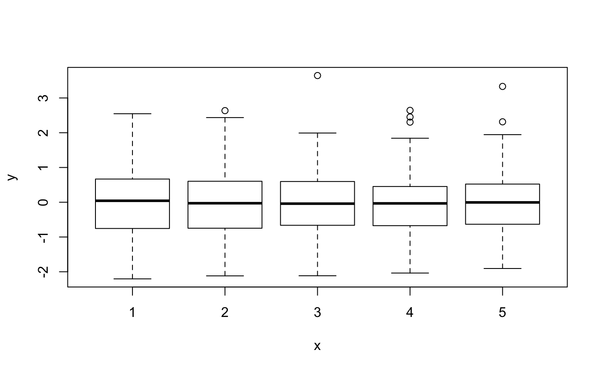
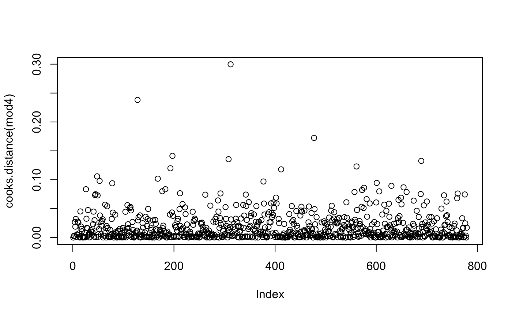
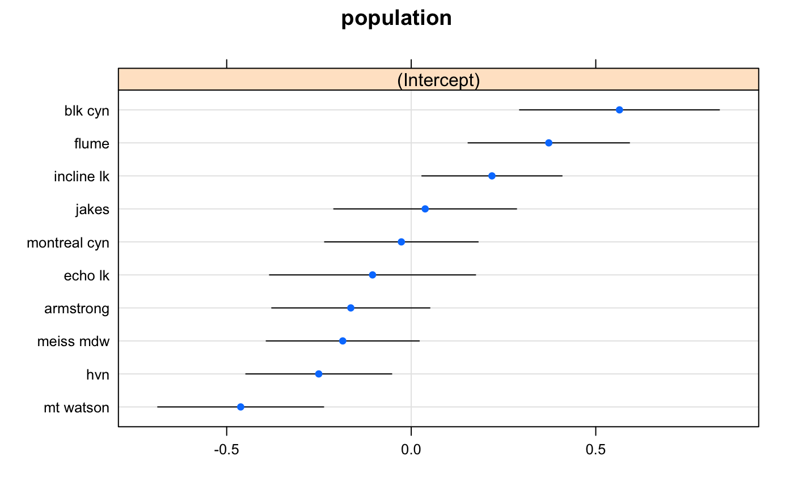
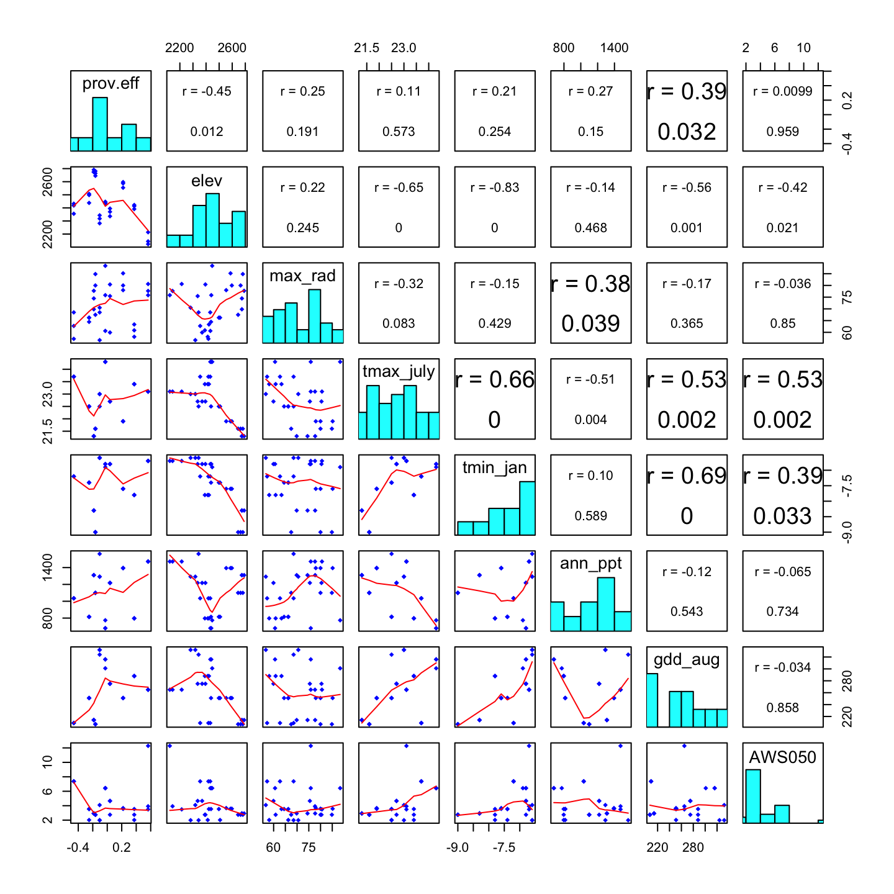

Week 6: Quantitative Genetics
Andrew Eckert, Katalin Csillery and Helene Wagner
2020-06-08
Week6_vignette.Rmd1. Overview of Worked Example
a) Goals
Justification: Natural selection acts on the heritable component of the total phenotypic variation. Traditionally, the heritable proportion of trait variation is estimated using information on the degree of relatedness between individuals. This approach - extensively employed in breeding and evolutionary quantitative genetics – ignores the molecular underpinnings of traits. An alternative approach is scanning genomes using molecular markers to search for so-called outlier loci (see week 11), where selection invoked a change in allele frequencies that is detectable as unusual differentiation between populations in different environments. This approach – advocated in population genetics - neglects information about the trait variation, but assumes that the markers are in or close to genes that code for adaptive traits. Genetic outliers often hard to interpret because generally we lack information what phenotype they affect and if this phenotype results in fitness differences between populations.
Learning Objectives: This lab was constructed to give you experience in working with basic quantitative and population genetic analyses to test hypotheses about the presence of local adaptation. Similar to the genomic revolution, phenotyping is also undergoing a revolution thanks to developments e.g. in imagery that allow for a highly automated recording of traits; a task that has been extremely time consuming in the past. These developments will certainly advance the quantitative genetic approach in the future in evolutionary biology let alone breeding. By the end of the laboratory, you should be able to do the following:
- Construct, fit, and assess linear mixed effects models (LMMs) to estimate genetic values and variance components of a phenotypic trait measured in families, e.g. in a common garden experiments.
- Use LMMs to estimate the heritability of a trait.
- Test for the presence of unusual trait differentiation among populations relative to differentiation expected in the absence of adaptation
- Assess if trait differentiation is correlated with differentiation in environmental variables to try identifying the selective component of the environment.
b) Data set
The data come from a study of western white pine (Pinus monticola Dougl. ex D. Don) sampled around the Lake Tahoe Basin of California and Nevada. These data consist of 157 trees sampled from 10 populations (n = 9 to 22 trees/population). Within each population, trees were sampled within three plots. For each plot, GPS coordinates were collected (i.e. each plot in each population has its own GPS coordinates) and used to generate a set of 7 environmental variables. From these trees, needle tissue was collected from which total DNA was extracted and genotyped for 164 single nucleotide polymorphisms (SNPs). Seeds were also collected and planted in a common garden. The seedlings (n = 5 to 35/tree) were measured for several phenotypic traits. The phenotypic trait we will be working with today is known as the carbon isotope ratio (\(δ^{13}C\)). It is the ratio of two isotopes of carbon (\(^{13}C\) and \(^{12}C\)) relative to an experimental control, and it is strongly correlated with intrinsic water-use efficiency in plants. Plants need water to live, so it is not a stretch of the imagination to believe that this phenotypic trait has a link with plant fitness.
We will thus have the following data:
- WWP_phenotype_data.txt: Phenotypic measurements for 5 seedlings per tree made in a common garden.
- WWP.ecogen: an ‘ecogen’ object (package ‘EcoGenetics’) with SNP genotypes for all trees sampled in the field, and with environmental data collected from each plot within each population.
c) Required R packages
Most required packages should have been installed already when you installed ‘LandGenCourse’.
library(LandGenCourse) library(lme4) #require(EcoGenetics) library(methods) library(tibble) #require(lattice) #require(MuMIn) #require(predictmeans) #require(nlme) #require(QstFstComp) #require(car)
Package ‘ggeffects’ not automatically installed with ‘LandGenCourse’:
if(!require(ggeffects)) install.packages("ggeffects", repos='http://cran.us.r-project.org')
## Warning in library(package, lib.loc = lib.loc, character.only = TRUE,
## logical.return = TRUE, : there is no package called 'ggeffects'##
## The downloaded binary packages are in
## /var/folders/kz/fv8pzy0d3cl_mp3md294cvbh0000gn/T//RtmpCymydl/downloaded_packagesSource two files with additional functions:
source(system.file("extdata", "supplemental_R_functions.R", package = "LandGenCourse")) source(system.file("extdata", "panel.cor.r", package = "LandGenCourse"))
2. Estimate genetic and non-genetic variance components from a common garden experiment
Motivation: A lot of genetics can be carried out without use of any molecular markers. Practitioners of empirical population genetics forget this quite often. A common garden allows us to create a standardized environment in which we minimize the influence of environment on the expression of a particular phenotypic trait. Phenotypic variation can be partitioned to genetic , environmental and residual components based on quantitative genetic theory. Further, we may also test for the presence of interaction between the genetic and environmental variation. The rationale of a common garden is to “standardize” the environment, thus phenotypic variation we observe is mainly due to genetic variation, even though environmental heterogeneity can never be completely eliminated and we still have to additionally control for it, e.g. using a block design (see below).
Goals & Background: The goal for this part of the laboratory is to construct, fit, and assess LMMs for \(δ^{13}C\). We will be using the data in the file named “WWP_phenotypic_data.txt”. These data are organized in a tab-delimited text file with seedlings grouped by maternal tree (i.e. its mother tree), plot, and population. Also included is an experimental treatment known as “block”. In a common garden, seedlings from the same maternal tree are randomized among blocks to avoid the influence of micro-environmental variation on expression of phenotypic traits.
a) Import phenytypic data
phen <- read.delim(system.file("extdata", "WWP_phenotype_data.txt", package = "LandGenCourse"), sep = "\t", header = T) tibble::as.tibble(phen)
## Warning: `as.tibble()` is deprecated as of tibble 2.0.0.
## Please use `as_tibble()` instead.
## The signature and semantics have changed, see `?as_tibble`.
## This warning is displayed once every 8 hours.
## Call `lifecycle::last_warnings()` to see where this warning was generated.## # A tibble: 779 x 5
## population plot family block d13c
## <fct> <fct> <int> <int> <dbl>
## 1 blk cyn BC1 59 5 -30.2
## 2 blk cyn BC1 59 2 -29.7
## 3 blk cyn BC1 59 4 -29.6
## 4 blk cyn BC1 59 3 -29.2
## 5 blk cyn BC1 59 1 -29.0
## 6 blk cyn BC1 60 4 -31.2
## 7 blk cyn BC1 60 3 -30.7
## 8 blk cyn BC1 60 1 -30.5
## 9 blk cyn BC1 60 5 -30.1
## 10 blk cyn BC1 60 2 -29.3
## # … with 769 more rowsCheck the variable types: ‘family’ and ‘block’ have been imported as type ‘integer’, and we need to convert them to ‘factor’ first.
## population plot family block d13c
## "factor" "factor" "factor" "factor" "numeric"b) Fit linear mixed effects models (LMM) to trait data observed on families
Now,we are ready to fit a series of linear models. Here we will fit four models in total, though the last two are equivalent for our data: - mod1: a model with only fixed effects (intercept and block), - mod2:a LMM with an fixed effects and a random effect due to family, and - mod3:a LMM where the random effect due to family is nested within population. We will thus be ignoring the variable “plot”. - mod4:a LMM where the nesting of family within population is not explicitly specified, it is implied by the data.
Note: ‘d13c ~ 1 + block’ is equivalent to ‘d13c ~ block’ (see video, Part 1).
mod1 <- lm(d13c ~ block, data = phen) mod2 <- lme4::lmer(d13c ~ 1 + (1|family) + block,data = phen, REML = TRUE) mod3 <- lme4::lmer(d13c ~ 1 + (1|population/family) + block, data = phen, REML = TRUE) mod4 <- lme4::lmer(d13c ~ 1 + (1|population) + (1|family) + block, data = phen, REML = TRUE)
Models ‘mod3’ and ‘mod4’ produce identical results, as long as each family has its own unique ID. In the following, we will use ‘mod4’ as it simplifies interpretation (as commonly used in quantitative genetics).
Notice that we are using REML=TRUE, which stands for restricted maximum likelihood. This method is advised for quantitative genetic analysis, because it provides unbiased estimates of the variance components. The other approach would be to use ML or maximum likelihood, however, it generally underestimates the residual variance, thus leading to inflated estimates of the family variance and thus the heritability. ML would be needed e.g. to test fixed effects.
c) Compare model fit
Now, let’s explore which model best fits our data. To do this we will use the Akaike Information Criterion (AIC). This statistic scores model fit while giving a penalty for the number of parameters in a model. The model with the lowest score is the preferred model.
How do we ensure that the AIC values of the different models are comparable?
- For ‘mod1’ that was fitted with ‘lm’, we use the function ‘AIC’.
- For the other models that were fitted with ‘lmer’, we use ‘extractAIC’.
For model comparison purposes, we have to use the ML fit, as AIC is no longer valid for REML. The function ‘extractAIC’ refits the models with ‘REML=FALSE’ to obtain AIC values that are comparable between models with different fixed effects (though this does not apply here because the fixed effects were the same), or between models fitted with ‘lm’ and ‘lmer’. It returns two values, the first is the ‘equivalent degrees of freedom’ of the fitted model, and the second is the ‘AIC’ value. Here we only extract the second value.
aic_vals <- c(AIC(mod1), extractAIC(mod2)[2], extractAIC(mod3)[2], extractAIC(mod4)[2]) names(aic_vals) <- c("mod1","mod2","mod3", "mod4") aic_vals
## mod1 mod2 mod3 mod4
## 2120.987 2080.266 2051.207 2051.207Hence, model ‘mod3’ (and its equivalent ‘mod4’) appears to be the best model. This suggests that there are important differences among populations, and among trees within populations.
We will learn more about model selection later in the course (Week 12).
d) Check model validity
Is the model ‘mod4’ valid? Let’s check the residuals. The function ‘residplot’ from package ‘predictmeans’ produces four diagnostic plots for a model fitted with ‘lmer’. The option ‘level’ indicates which random factor should be plotted (here: 1 = family, 2 = population). This function uses the ‘conditional’ residuals, which represent ‘observed - fitted(fixed) - fitted(random)’.
predictmeans::residplot(mod4, group="population", level=1)
Hint: You may need to use the arrow symbols to scroll through the plots in the ‘Plot’ tab in RStudio.
The plots are:
- A normal probability plot of the random effect ‘family’: points should follow line.
- A normal probability plot of (conditional) residuals: points should follow line.
- A scatterplot of the (conditional) residuals against fitted values: the plot should not ‘thicken’ (which would indicate differences in variances between groups such as blocks = heteroscedasticity). Due to the option ’group = “population”, residuals are colored by population.
- A plot of fitted values against observed: the scatterplot shows the overall model fit, where points would fall on a line if the model explained 100% of the variation in the response (you can ignore the dashed line).
In addition, we may want to look for outliers and influential points. For this, we create two additional plots. Here we use marginal residuals, which are calculated without accounting for random effects: ‘observed - fitted(fixed)’.
- A plot of marginal residuals against the fixed effect ‘block’: there should not be any large outliers.
- A plot of Cook’s distances, where D > 1 indicates influential points (more relevant when using quantitative predictors (covariates). Note: this may take a while to calculate.
First we calculate the marginal residuals by predicting values with fixed effects only (‘re.form=NA’) and subtract these fitted values from the observed values.
marginal.residuals <- mod4@frame$d13c - predict(mod4, re.form=NA) plot(mod4@frame$block, marginal.residuals)

#predictmeans::CookD(mod4) plot(cooks.distance(mod4))

The residual plots did not indicate any major problem. Hence we can proceed with interpreting the results.
e) Estimate variance components
How much of the variation in \(d^{13}C\)’ is explained by the fixed and random effects? In models fitted with ‘lm’, we use the \(R^2\) statistics to describe the total variance in the response explained by all the predictors in the model. In a mixed effects modeling context, there is no longer an obvious definition for \(R^2\). Two approximate \(R^2\) statistics have been implemented in the function ‘r.squaredGLMM’ from the package ‘MuMIn’ (which stands for multi-model inference):
- R2m: marginal \(R^2\). This is the variance explained by fixed factors.
- R2c: conditional \(R^2\). This is interpreted as the variance explained by both fixed and random factors, i.e., the entire model.
In both statistics, the denominator is a sum of the fixed-effects variance, the random effect variance, and the residual variance.
MuMIn::r.squaredGLMM(mod4)
## Warning: 'r.squaredGLMM' now calculates a revised statistic. See the help page.## R2m R2c
## [1,] 0.02466321 0.2297893The fixed effect ‘block’ had a small effect of about 2.5%. The total model explained about 23%, most of which was due to the random effects.
How important are the random factors ‘population’ and ‘family’? The summary for ‘mod4’ lists the variance components under ‘Random effects’.
summary(mod4)
## Linear mixed model fit by REML ['lmerMod']
## Formula: d13c ~ 1 + (1 | population) + (1 | family) + block
## Data: phen
##
## REML criterion at convergence: 2050.4
##
## Scaled residuals:
## Min 1Q Median 3Q Max
## -2.5436 -0.7485 0.0151 0.6028 3.7867
##
## Random effects:
## Groups Name Variance Std.Dev.
## family (Intercept) 0.08164 0.2857
## population (Intercept) 0.10859 0.3295
## Residual 0.71429 0.8452
## Number of obs: 779, groups: family, 157; population, 10
##
## Fixed effects:
## Estimate Std. Error t value
## (Intercept) -30.62635 0.12666 -241.792
## block2 -0.13833 0.09667 -1.431
## block3 -0.35071 0.09520 -3.684
## block4 -0.10060 0.09538 -1.055
## block5 -0.39443 0.09651 -4.087
##
## Correlation of Fixed Effects:
## (Intr) block2 block3 block4
## block2 -0.374
## block3 -0.379 0.498
## block4 -0.378 0.497 0.505
## block5 -0.374 0.492 0.499 0.496Here we extract these variance components from the summary and divide by their sum.
fam.var <- nlme::VarCorr(mod4)$"family"[1] prov.var <- nlme::VarCorr(mod4)$"population"[1] res.var <- summary(mod4)$sigma^2 Components <- data.frame(fam.var, prov.var, res.var) Components / sum(Components)
## fam.var prov.var res.var
## 1 0.09026004 0.1200531 0.7896869Compared to Cohen’s (1988) effect sizes, population and family each had a medium-size effect (> 9% variance explained) on d13c values.
f) Significance testing
In quantiative genetics, we are more interested in estimating variance components and effects than hypothesis testing. Let’s do some testing anyways to see how it works.
The confusing part here is that we need to fit the model differentely to test fixed and random effects. For random effects, we can use model ‘mod4’ that was fitted with ‘REML=TRUE’.
The simplest way to test the significance of a random effect is to calculate the model with and without it and use ‘anova()’ to test whether the more complex model (listed first) explains significantly more than the simpler model. This implements a likelihood ratio test (LR). By default, when used for a model fitted with ‘lmer’, ‘anova’ will refit the models with ML. Here we use the option’refit=FALSE’ to prevent this.
#mod.noPop <- update(mod4, .~. -(1 | population)) mod.noPop <- lmer(d13c ~ 1 + (1 | family) + block, data=phen, REML=TRUE) mod.noFam <- lmer(d13c ~ 1 + (1 | population) + block, data=phen, REML=TRUE) anova(mod4, mod.noPop, refit=FALSE)
## Data: phen
## Models:
## mod.noPop: d13c ~ 1 + (1 | family) + block
## mod4: d13c ~ 1 + (1 | population) + (1 | family) + block
## npar AIC BIC logLik deviance Chisq Df Pr(>Chisq)
## mod.noPop 7 2097.2 2129.8 -1041.6 2083.2
## mod4 8 2066.4 2103.7 -1025.2 2050.4 32.819 1 1.012e-08 ***
## ---
## Signif. codes: 0 '***' 0.001 '**' 0.01 '*' 0.05 '.' 0.1 ' ' 1anova(mod4, mod.noFam, refit=FALSE)
## Data: phen
## Models:
## mod.noFam: d13c ~ 1 + (1 | population) + block
## mod4: d13c ~ 1 + (1 | population) + (1 | family) + block
## npar AIC BIC logLik deviance Chisq Df Pr(>Chisq)
## mod.noFam 7 2077.4 2110.0 -1031.7 2063.4
## mod4 8 2066.4 2103.7 -1025.2 2050.4 12.996 1 0.0003122 ***
## ---
## Signif. codes: 0 '***' 0.001 '**' 0.01 '*' 0.05 '.' 0.1 ' ' 1We can do a similar test for the fixed effecs. Here we have only one effect.
mod.noBlock <- lmer(d13c ~ 1 + (1 | population) + (1 | family), data=phen, REML=TRUE) mod.noFam <- lmer(d13c ~ 1 + (1 | population) + block, data=phen, REML=TRUE) anova(mod4, mod.noBlock, refit=TRUE, REML=FALSE)
## refitting model(s) with ML (instead of REML)## Data: phen
## Models:
## mod.noBlock: d13c ~ 1 + (1 | population) + (1 | family)
## mod4: d13c ~ 1 + (1 | population) + (1 | family) + block
## npar AIC BIC logLik deviance Chisq Df Pr(>Chisq)
## mod.noBlock 4 2067.7 2086.3 -1029.8 2059.7
## mod4 8 2051.2 2088.5 -1017.6 2035.2 24.454 4 6.475e-05 ***
## ---
## Signif. codes: 0 '***' 0.001 '**' 0.01 '*' 0.05 '.' 0.1 ' ' 1If we have several fixed effects, it may be more convenient to use function ‘Anova’ from the ‘car’ package to perform a Wald chi-square test. However, the model must be fitted with ML. Choose between type II and type II sums of squares (see video).
mod4.ML <- lmer(d13c ~ 1 + (1 | population) + (1 | family) + block, data=phen, REML=FALSE) car::Anova(mod4.ML, type="II", test.statistic="Chisq")
## Registered S3 methods overwritten by 'car':
## method from
## influence.merMod lme4
## cooks.distance.influence.merMod lme4
## dfbeta.influence.merMod lme4
## dfbetas.influence.merMod lme4## Analysis of Deviance Table (Type II Wald chisquare tests)
##
## Response: d13c
## Chisq Df Pr(>Chisq)
## block 24.905 4 5.257e-05 ***
## ---
## Signif. codes: 0 '***' 0.001 '**' 0.01 '*' 0.05 '.' 0.1 ' ' 13. Estimate trait heritability
Motivation: Now that we have learned how to estimate genetic values for \(δ^{13}C\), let’s learn how to estimate what fraction of the total variation in trait values is due to genetic effects. More precisely, we shall estimate the heritable proportion of the trait variation. Not all genetic effects are transmitted from one generation to the next, but the so-called additive genetic effects (see Week 6 lecture). Here we have data on half-siblings because seeds come from the same mother tree, but their father is most likely different because our species is wind pollinated. In such family structure, the estimation of the additive genetic variance is straightforward because these analyses provide key information about whether or not local adaptation should even be considered. Remember that local adaptation is about genetically determined phenotypes that vary across environments in responses to differing selective pressures. This step allows us to assess how genetic variation for a phenotypic trait is distributed across the landscape.
Goals & Background: The goal for this part of the laboratory is to estimate heritability, trait differentiation, and correlation with environment for trait values determined in Part 1. To do this, we will be using the output from the previous part of the laboratory and the environmental data contained in the file named “WWP_environmental_data.txt”. As with the phenotype file this is a tab-delimited text file.
a) Estimate heritability
Let’s start with estimating the heritability of \(δ^{13}C\). If you remember from your undergraduate evolution course, heritability refers generally to the proportion of phenotypic variance due to genetic variance. It comes in at least two different versions. The version we are interested in is narrow-sense heritability (\(h^2\)), which is defined as the ratio of additive genetic variance to total phenotypic variance:
\[h^{2} = \frac{\sigma^{2}_{additive}}{\sigma^{2}_{total}}\] We need to extract the variance components from ‘mod3’ for all model terms. We do this visually by printing mod3 to screen or using a set of functions applied to ‘mod3’. Here, we will do both.
mod4## Linear mixed model fit by REML ['lmerMod']
## Formula: d13c ~ 1 + (1 | population) + (1 | family) + block
## Data: phen
## REML criterion at convergence: 2050.381
## Random effects:
## Groups Name Std.Dev.
## family (Intercept) 0.2857
## population (Intercept) 0.3295
## Residual 0.8452
## Number of obs: 779, groups: family, 157; population, 10
## Fixed Effects:
## (Intercept) block2 block3 block4 block5
## -30.6263 -0.1383 -0.3507 -0.1006 -0.3944Using the results from above, let’s calculate \(h^2\). If we assume that the seedlings from each maternal tree are half-siblings (i.e. same mom, but each with a different father) then \(σ^2_A = 4 σ^2_{family}\) (so variance due to family). If the seedlings were all full-siblings, then the 4 would be replaced with 2. Let’s assume half-siblings. We can then do the following:
Copying the values visually from the output above (note that we need to square the standard deviations to get the variances):
add_var <- 4*(0.2857^2) total_wp_var <- (0.2857^2) + (0.3295^2) + (0.8452^2) h2 <- add_var/total_wp_var h2
## [1] 0.3609476And the same using the variance components from above:
one.over.relatedness <- 1/0.25 h2 <- (one.over.relatedness*Components$fam.var) / sum(Components) h2
## [1] 0.3610402Question: Inspect your value of \(h^2\). What does it mean?
We have generated a point estimate for \(h^2\). It represents the average \(h^2\) across populations after removing the genetic effects due to population differences. To take this further and also get a SE (so that you can construct a confidence interval), you could check out this R package: https://bioconductor.org/packages/release/bioc/html/GeneticsPed.html
b) Estimate trait differentiation
Great, we have shown that within population genetic variation is statistically greater than zero. What about among population genetic variation? Let’s get to that right now. To measure among population genetic variation we will use a statistic known as \(Q_{ST}\). It is similar in concept to \(F_{ST}\) from population genetics. To estimate \(Q_{ST}\), we will use our LMM output again. If we assume that all seedlings are again half-siblings, then:
\[Q_{ST} = \frac{\sigma^{2}_{population}} {\sigma^{2}_{population}+8\sigma^{2}_{family}}\]
Again, we can do this by copying the values visually from the output:
num_qst <- 0.3295^2 dem_qst <- 0.3295^2 + (8*(0.2857^2)) qst <- num_qst/dem_qst qst
## [1] 0.1425618Or using the variance components from above:
num_qst <- Components$prov.var dem_qst <- Components$prov.var + (8*Components$fam.var) qst <- num_qst/dem_qst qst
## [1] 0.1425583Question: Inspect your ‘qst’ value:
- What does it mean?
- Look at the quantities in the equation above, what is the denominator equal to? Is it the total phenotypic variance or the total genetic variance?
4. Compare \(Q_{st}\) to \(F_{st}\) measured from SNP data
If you want to learn more about analyzing SNP data in R, here are some resources:
- adegenet SNP tutorial: http://adegenet.r-forge.r-project.org/files/tutorial-genomics.pdf
- popgen.nescent.org (click on ‘Users’ tab): http://popgen.nescent.org/
a) Import ‘ecogen’ object
Load the data set ‘WWP.ecogen’.
data(WWP.ecogen, package="LandGenCourse")
This ‘ecogen’ object has information in the following slots:
- XY: data frame with spatial coordinates (here: longitude, latitude)
- P: data frame with phenotypic traits (here: intercept, family effects and population effects from mod4)
- G: data frame with genotypic data (here: 164 SNPs)
- A: generated automatically from G: matrix of allele counts (codominant markers only)
- E: data frame with environmental data (here: 7 bioclimatic site variables)
- S: data frame with structure (hierarchical sampling levels)
b) Compare \(Q_{ST}\) to \(F_{ST}\)
See ‘Week 6 Bonus Material’ for calculating Fst from the SNP data.
Here, we will use the ‘QstFstComp’ library to formally test whether or not \(Q_{ST} > F_{ST}\) for \(δ^{13}C\). The function ‘QstFstComp’ from the package with the same name calculates both \(Q_{ST}\) and \(F_{ST}\) itself, then tests whethere they are different from each other.
Note: as this is a permutation test, if you run it several times, the results may change slightly from run to run.
First, however, we need to re-format the data to the format that ‘QstFstComp’ expects. This is easy with the function ‘ecogen2hierfstat’.
WWP.hierfstat <- EcoGenetics::ecogen2hierfstat(WWP.ecogen, pop='population', to_numeric=TRUE, nout=1) phen_mod <- phen[,-c(2,4)] QstFst_out <- QstFstComp::QstFstComp(fst.dat = WWP.hierfstat, qst.dat = phen_mod, numpops = nlevels(WWP@S$population), nsim = 10000, breeding.design = "half.sib.dam", dam.offspring.relatedness = 0.25, output = "concise_nowrite")
## Registered S3 method overwritten by 'spdep':
## method from
## plot.mst ape## [1] "No output file of Q minus F values written."QstFst_out## [[1]]
## Calculated Qst-Fst Lower Bound crit. value.2.5%
## 0.11917632 -0.02735188
## Upper bound crit. value.97.5%
## 0.06420595
##
## [[2]]
## [1] "Qst-Fst values output to file: /Users/helene/Desktop/R_Github_projects/LandGenCourse/vignettes/QminusFvalues_2020-06-08_22-23-14.txt"
##
## [[3]]
## Lower one-tailed p value Upper one-tailed p value Two-tailed p value
## 0.995 0.005 0.010
##
## [[4]]
## Estimated Fst Lower Bound CI.2.5% Upper bound CI.97.5%
## 0.01419871 0.01110717 0.01741976
##
## [[5]]
## Estimated Qst Lower Bound CI.2.5% Upper bound CI.97.5%
## 0.13337503 0.02725072 0.36234904
##
## [[6]]
## Va Lower bound CI.2.5% Upper bound CI.97.5%
## 0.3180848 0.1065291 0.5436353The output contains the following elements:
- ‘[[1]]’: The calculated difference between Qst and Fst, with 95% critical values of the distribution of the distribution under the null hypothesis of no difference.
- ‘[[2]]’: an output file name (though we suppressed the writing of this file with the option ‘output=“consise_nowrite”)’
- ‘[[3]]’: p-values for a hypothesis test with H0: \(Q_{ST} = F_{ST}\), with three different alternatives (‘less’, ‘greater’, ‘two.sided’)
- ‘[[4]]’: the Fst value estimated from the data with 95% confidence intervals.
- ‘[[5]]’: the Qst value estimated from the data with 95% confidence intervals.
- ‘[[6]]’: the additive genetic variance for the trait with 95% confidence intervals.
Note: the values are somewhat different from what we calculated, most likely because the function ‘QstFstComp’ did not account for the block effect.
Questions: Inspect the first and third elements of the list ‘QstFst_out’:
- For the observed values, is \(Q_{ST} > F_{ST}\)?
- Which alternative is most appropriate here?
- Can the null hypothesis be rejected with alpha = 0.05?
- What does this mean biologically?
5. Assess correlation between trait and environment
Motivation: Similar to the fixed effects, estimates of the random effects can be also extracted from a mixed effects model and used in further analysis. Such estimates are called Best Linear Unbiased Predictions or BLUPs. They are technically predictions because when you fit a mixed effects model, initially only the mean and variance of the random effects are estimated. Then, the random effects or BLUPs for a given experimental unit (e.g., population or family) can be “predicted” from the estimated mean and variance (and the data).
Goals and background: Here we will extract block, population and family effects from the model. Then we will correlate the plot-level bioclimatic data with the population effects to see if population differences in seedling d13C trait can be explained by the environment at the site where the mother tree stands. The underlying idea is to look if selection has made the population different.
a) Describe and extract effects
Which blocks, populations or trees had higher mean d13c values than others? To answer this question, we extract and plot the fixed and random effects. We’ll start with the fixed effect for ‘block’.
The effects are not simply the mean of all seedlings from the same block, but the marginal effect of ‘block’, i.e., estimates of the mean per block after accounting for all other effects (i.e., keeping population and family constant).
There are two ways to extract the block effects. The first is with function ‘fixef’. This treats the first level of ‘block’ as a reference level and uses it to estimate the global intercept, then expresses the effect of the other blocks as deviations from the first block.
lme4::fixef(mod4)
## (Intercept) block2 block3 block4 block5
## -30.6263478 -0.1383311 -0.3507053 -0.1006031 -0.3944314A more convenient way to extract the effects is with function ‘ggeffect’ of the package ‘ggeffects’.
Note: The package ‘ggeffects’ is not automatically imported with ‘LandGenCourse’ to avoid incompatibility issues. You can install by runing ‘install.packages(“ggeffects”)’ below without ‘#’.
##
## # Predicted values of d13c
## # x = block
##
## x | Predicted | SE | 95% CI
## ---------------------------------------
## 1 | -30.63 | 0.13 | [-30.87, -30.38]
## 2 | -30.76 | 0.13 | [-31.01, -30.51]
## 3 | -30.98 | 0.13 | [-31.23, -30.73]
## 4 | -30.73 | 0.13 | [-30.98, -30.48]
## 5 | -31.02 | 0.13 | [-31.27, -30.77]The table lists the predicted d13c value for each block (accounting for population and family) and a 95% confidence interval for each predicted value.
Now let’s plot the effects (mean with 95% confidence interval) for each random factor, accounting for all other factors. Again, these are not simply means of observed traits values but marginal effect, accounting for all other factors in the model.
Note: If the plots appear in the ‘Plot’ tab in RStudio, use the arrows to scroll between plots.
## $family
##
## $population
We can see that there are considerable differences between populations, where ‘blk cyn’ has the highest, and ‘mt watson’ the lowest mean.
We can extract the values with ‘ranef’. Again, they are deviations from the global intercept (block 1). We are now ready to correlate the population effect to the environmental data.
## (Intercept)
## armstrong -0.16372457
## blk cyn 0.56424812
## echo lk -0.10480714
## flume 0.37270696
## hvn -0.25055204
## incline lk 0.21873458
## jakes 0.03776884
## meiss mdw -0.18557714
## montreal cyn -0.02673127
## mt watson -0.46206634head(fam.eff)
## (Intercept)
## 59 0.269660618
## 60 -0.036688490
## 61 -0.007035082
## 63 -0.259031610
## 64 0.087029419
## 65 -0.168188771b) Correlation of population effect with environment
We have population effects estimated for 10 populations, and bioclimatic data for 30 plots (3 plots x 10 populations). If we used all 157 rows of the site data set, this would inflate our sample size. To avoid this, we first extract 30 unique rows (one per plot) from the site data ‘WWP.ecogen@E’. Then we use’ match’ to find for each plot the corresponding population. This returns the row number (‘index’) and we use it to extract the corresponding population effect.
Plot.data <- dplyr::distinct(data.frame(WWP.ecogen@E, population=WWP.ecogen@S$population)) index <- match(Plot.data$population, row.names(prov.eff)) dat2 <- data.frame(prov.eff=prov.eff[index,1], Plot.data[,-8])
Now we estimate the correlation between the population effect and each bioclimatic variable. We summarize the results in a correlation matrix plot.
pairs(dat2, lower.panel=panel.smooth, upper.panel=panel.cor, diag.panel=panel.hist)

How to read this plot:
- Each diagonal cell shows the name and histogram of one variable.
- Each cell in the upper triangle shows the correlation coefficient r, and the p-value for the correlation, between the two variables that define the corresponding row and column. (A larger font indicates a stronger correlation, though this seems to be inconsistent).
- Each cell in the lower triangle shows a scatterplot of the two variables that define the corresponding row and column. A smooth regression line is shown in red.
Questions:
- Which site variables show the strongest correlation with the population effect?
- Which site variables are significantly correlated with the population effect?
- OVerall, does the population effect appear to be related to the environment?
7. R Exercise Week 6
Task: Test whether observed heterozygosity of Pulsatilla vulgaris adults depends on census population size. Fit a model at the individual level where you include a random effect for population.
Hints:
-
Load packages:
- Please install the package
inbreedR(to calculate individual measures of heterozygosity) from CRAN, if it is not yet installed. - You may want to load the packages
dplyrandggplot2. Alternatively, you can use::to call functions from packages.
- Please install the package
-
Import data and extract adults.
- Use the code below to import the data.
- Use
dplyr::filterto extract adults withOffID == 0.
Pulsatilla <- read.csv(system.file("extdata","pulsatilla_genotypes.csv", package = "LandGenCourse")) -
Calculate multilocus heterozygosity: Use package
inbreedRto calculate multilocus heterozygosity for each adult.- Use the function
inbreedR::convert_raw(x), where x is the matrix of genotypes only (no ID or other non-genetic data), with two columns per locus. Check the help file of the functionconvert_raw. - Use the function
inbreedR::MLHto calculate observed heterozygosity for each individual. - Add the result as a variable
hetto the adults dataset.
Example code from
inbreedR::MLHhelp file:data(mouse_msats) genotypes <- convert_raw(mouse_msats) het <- MLH(genotypes) - Use the function
-
Add population-level data:
- Import the file “pulsatilla_population.csv” with the code below.
- Do a left-join to add the data to your adults dataset.
- Check the dataset.
Pop.data <- read.csv(system.file("extdata", "pulsatilla_population.csv", package = "LandGenCourse")) Scatterplot with regression line: Use ggplot2 to create a scatterplot of adult heterozygosity against census population size (
population.size), with a regression line.Fit linear mixed model: Adapt code from section 3.c to perform a regression of individual-level observed heterozygosity (response variable) on census population size (predictor), including population as a random effect. Fit the model with REML and print a summary.
Test fixed effect: Adapt code from section 2.f to test the fixed effect with function
car::Anova.Check residual plots: Adapt code from section 2.d to create residual plots.
Questions: There is one influential point in the regression analysis:
- What was the direction of the relationship, did heterozygosity increase or decrease with census population size?
- Was the fixed effect statistically significant?
- Was the model valid, or was there a problem with the residual plots?
- What would be the main issue, and what remedy could you suggest?